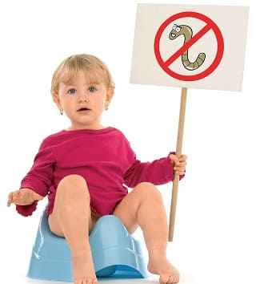
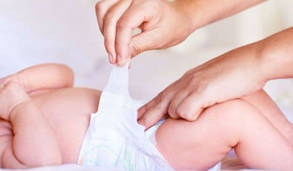

Ваш ребенок чешет попу? Ознакомьтесь с нашим путеводителем по ректальному зуду.
ПРИЧИНЫ
Четырьмя самыми распространенными причинами анального зуда у детей являются:
• острицы;
• пищевые аллергии;
• грибковые инфекции, обычно следующие за лечением антибиотиками;
• бактериальная инфекция.
Бактериальные инфекции. Распространенная причина стойкой, вызывающей зуд сыпи с папулами или гнойничками, разбросанными вокруг анального отверстия, — бактериальная инфекция, обычно вызванная стрептококками или стафилококками. Вы можете думать о бактериальной инфекции, если:
• сыпь сохраняется при отсутствии лечения;
• сыпь ухудшается: она становится более распространенной, более красной и иногда даже кровоточит;
• все обычные методы лечения не помогают;
• другие причины исключены.
Если ваш врач подозревает бактериальную инфекцию, он выпишет подходящий антибактериальный крем.
ЧТО ДЕЛАТЬ
Помимо определения причины, попробуйте эти общие домашние средства:
• посадите ребенка в ванну с пекарской содой (добавьте чашку пекарской соды в ванну с теплой водой);
• наносите мазь для подгузников на зудящий участок несколько раз в день, а особенно перед сном;
• подрежьте ноготки ребенка как можно короче. Расчесывание может усиливать и распространять инфекцию.

Здоровье ребенка от докторов Сирс / Сирс У. и др.